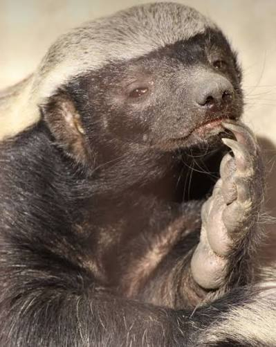
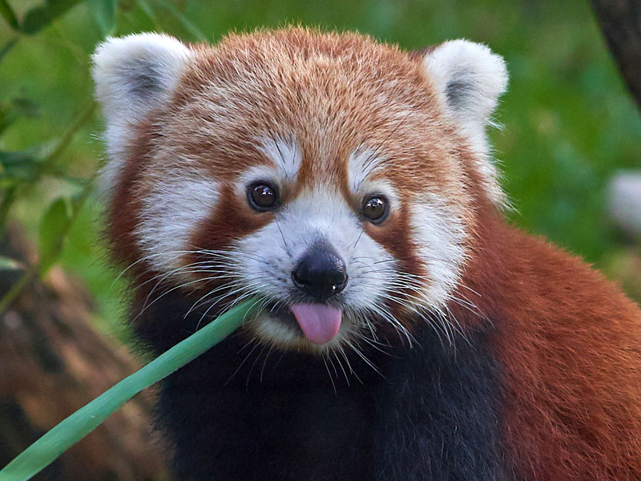
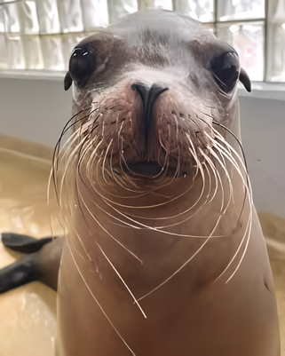

Protege la vida silvestre: Apadrina hoy
Descubre el fascinante mundo de nuestra fauna rescatada. Con tu apadrinamiento, no solo aprendes sobre el hábitat natural, la dieta y las características físicas de especies únicas como el tejón melero, el panda rojo y el león marino, sino que financias directamente su cuidado diario. Conviértete en su mayor aliado. Ver animales para apadrinar100%
alimentacion natural
24/7
Monitoreo médico
Especies Representativas
Fichas biológicas de las tres especies clave que estructuran nuestros programas de conservación

tejon melero
Mustélido renombrado por su notable resistencia inmunológica, cuero elástico de alta densidad e instinto exploratorio.

panda rojo
Mamífero arborícola exclusivo de los bosques nubosos del Himalaya, vital para la dispersión de semillas de altura.

panda rojo
Mamífero arborícola exclusivo de los bosques nubosos del Himalaya, vital para la dispersión de semillas de altura.
¿Listo para formar parte de la reserva?
Inicia tu apadrinamiento hoy. Cada donación respalda nutrición clínica y hábitats protegidos.